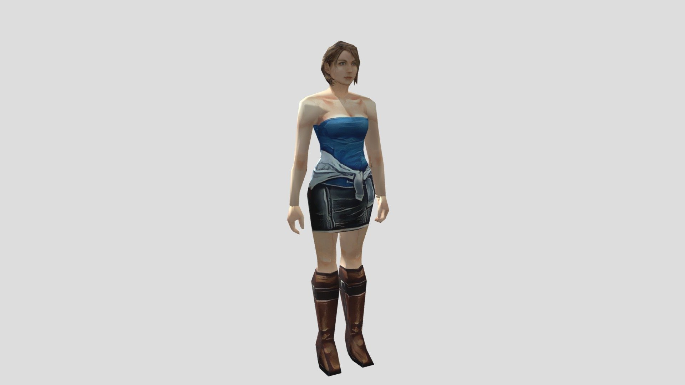

Jill Valentine is an American Special Operations Agent (SOA) of the Bioterrorism Security Assessment Alliance (BSAA), of which she is a co-founder and an original member. She is a respected high-ranking operator, owing to her commitment in eradicating bioterrorism and her survival amid to the Biohazardous outbreaks in Arklay County in 1998.
Jill has appeared in many of the main-series and spin-off Resident Evil games since the series' beginning. She served as one of two playable deuteragonists in the original Resident Evil, and has had an important role in the series on her own and in other characters' stories since.

Jill Valentine's infamous, yet iconic zombie apocalypse look - a tube top and miniskirt. This is as she appears in the original Resident Evil 3.Updated for the modern remake of Resident Evil 3, Jill now looks a little more like the capable spec ops personnel she is, in her casual clothes at least.